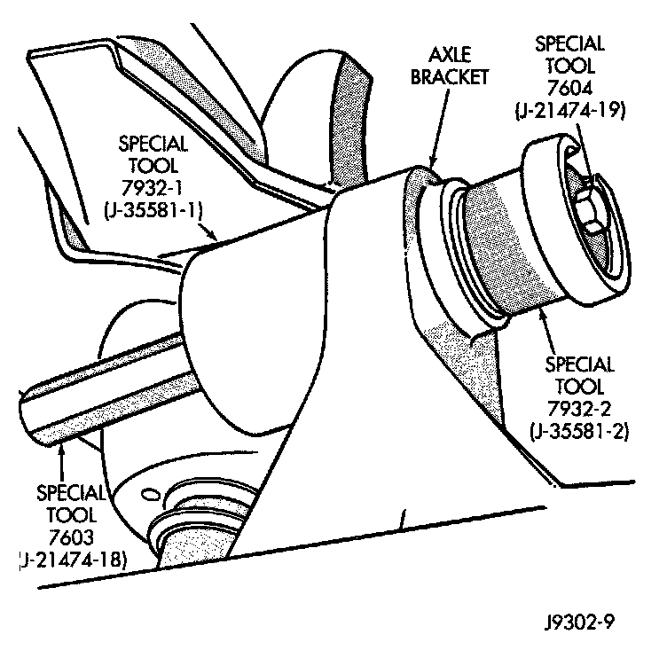
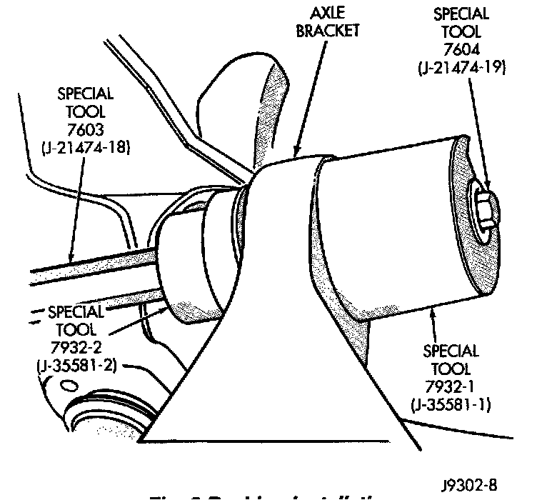

Axle Pivot Bushing: Service and Repair
AXLE BUSHING
REMOVAL
(1) Remove the upper suspension arm from axle.
(2) Position spacer 7932-1 (J-35581-1) over the bushing in the axle for two-wheel drive axles and right side on Model 30 axle.
(3) Install Bushing Removal/installer.

(4) Remove the bushing by tightening the Long Nut.
NOTE: For two-wheel drive axles and right side on Model 30 axle, do not remove spacer 7932-1 (J-35581-1). This spacer is need for installation.
INSTALLATION
(1) Position new bushing, Receiver and Installer on axle.

(2) Install the bushing by tightening the Long Nut.
(3) Remove tools and install the upper suspension arm.